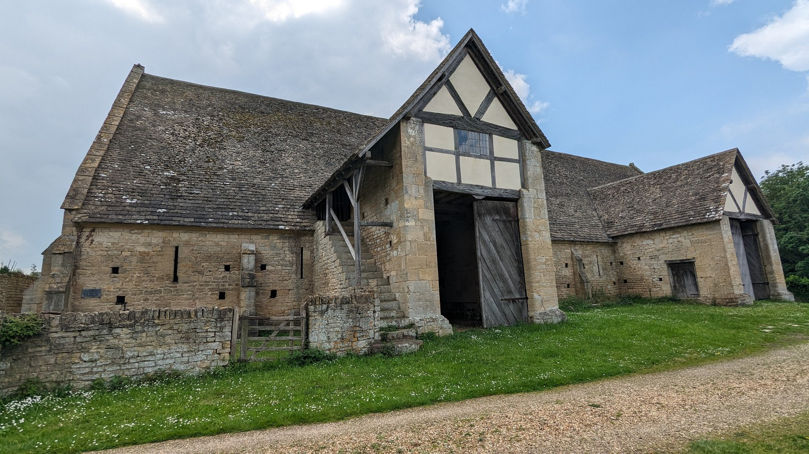
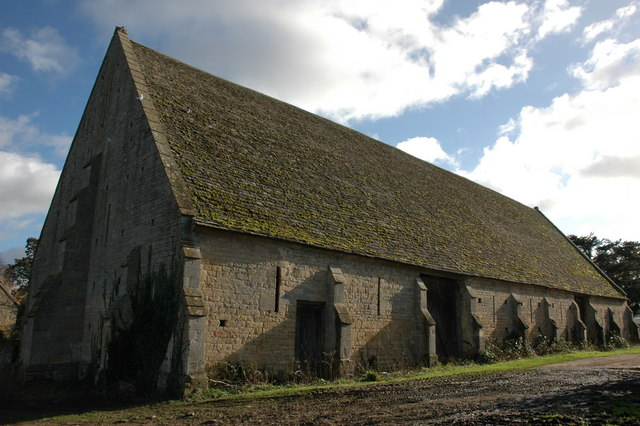

14th century
Barn constructed
A substantial stone barn was built for agricultural storage and work.
Discover Bredon Barn
A medieval landmark near TewkesburyHeritage, design, and place
Step inside one of Worcestershire's most atmospheric medieval barns.

Welcome
Bredon Barn is a large medieval threshing barn near Tewkesbury. This site introduces its long working history, its striking stone construction, and the experience of visiting a historic rural building that still feels rooted in the landscape around it.
Clear visitor information sits alongside engaging heritage content, with each page offering a consistent route into the building's story, design, setting, and practical appeal.
Timeline
14th century
A substantial stone barn was built for agricultural storage and work.
Working life
The building stored crops and produce through centuries of rural change.
1980
A serious fire badly damaged the structure and made conservation urgent.
Restoration
Careful restoration returned the barn to a stable, visitable condition.
Present day
The barn remains a quiet but memorable destination for local heritage visitors.
Architecture highlights
Robust local stone gives the barn its grounded, permanent quality.
The roof creates scale overhead and reveals the craft behind the building.
Repeated bays create rhythm, depth, and a strong museum-like sense of space.
The surrounding village and landscape help the building feel rooted in place.
Plan your visit
Bredon Barn is best approached as a quiet heritage visit: short, atmospheric, and focused on looking closely at structure, material, and setting.
See visitor detailsVisual story


Continue exploring
Follow the story from medieval agricultural work to architectural detail and visitor planning.